Looks: vanilla to ScapeLite
Start with the game as it is, with the Info Bar next to its panels, or with ScapeLite’s own panels instead. The welcome tour lets you choose and you can change it any time.
Free · community made · you stay in control
ScapeLite adds optional plugins to the game: info bars, pinned cards, a redesigned task queue, a smarter route planner, a live XP/hr graph, richer tooltips, chat tools, Discord updates for your clan and more. Pick only what you want from a built-in plugin marketplace.
Windows · works with the Steam version · never plays for you
Start with the game as it is, with the Info Bar next to its panels, or with ScapeLite’s own panels instead. The welcome tour lets you choose and you can change it any time.
Top and bottom bars with the numbers you care about: current task, XP per hour, gold, a real HP bar, panel buttons and an alerts bell for things like free quest slots and unspent barter charges.
Skills, Inventory, Equipment, Friends, Diary, Quests and Barter as small cards you can pin, with the game’s own buttons on them.
The current task and the queued ones in one compact panel with walking times, drag to reorder, roll controls and a route preview on the World Map when you hover a card.
A faster order for your queue, with and without teleports, and advice on which levers and slayer master to use, with the gain of every suggestion shown.
Resize any panel from a corner grip, lock it, snap panels together so they move as one, and place everything in the Layout Editor.
Clickable links, world tags, all message-type filters, a send-channel list and an SL button. Type /sl help for ScapeLite’s own chat commands.
Opt-in only: drops, unlocks and level-ups to your channels, an activity digest, a clan rank post and a live status card per member. Nothing is lost when Discord is busy.
A live graph of XP per hour, ETAs to your next level, and richer tooltips for XP, quests, lamps and Lucky tasks.
Invites and popups can never be hidden behind a panel, and you can move them where you like.
A pulsing status light with live FPS and a breakdown of where the time goes, so you can see if the game or a plugin is slow.
If one of ScapeLite’s background parts stops, it notices, logs it and restarts it.
Real screenshots from the game, taken with ScapeLite running.
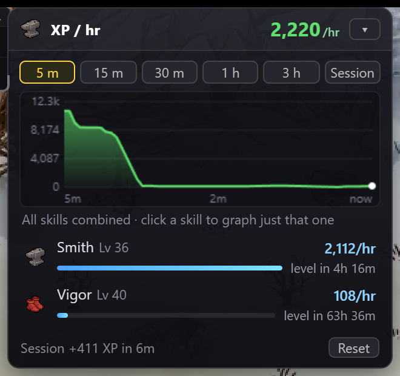
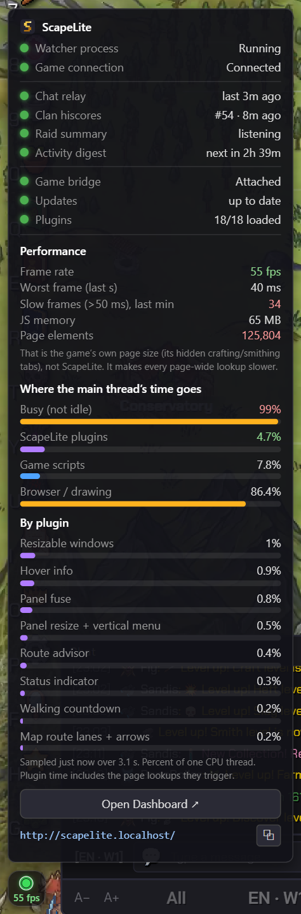
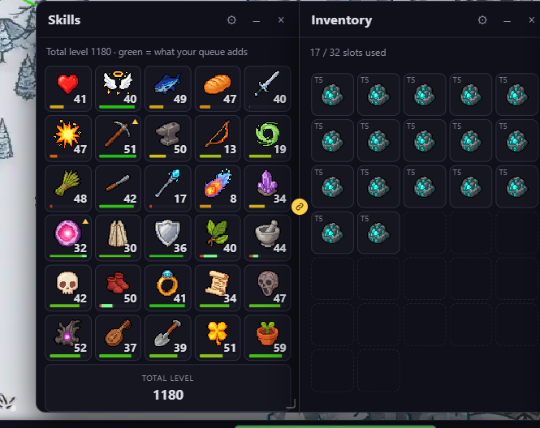
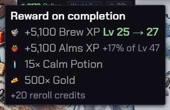
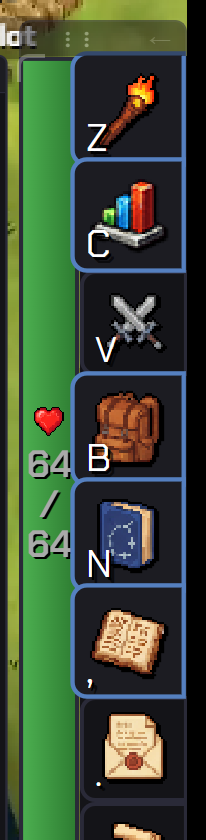
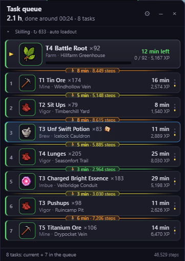
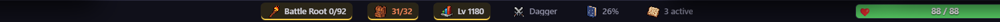
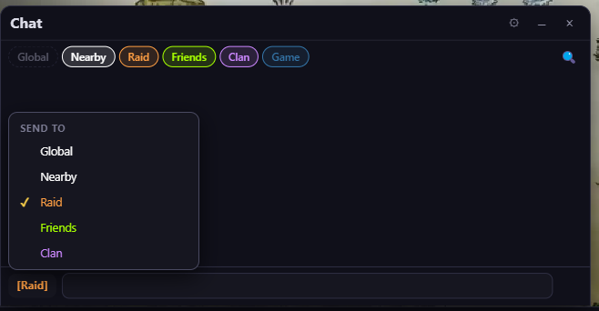
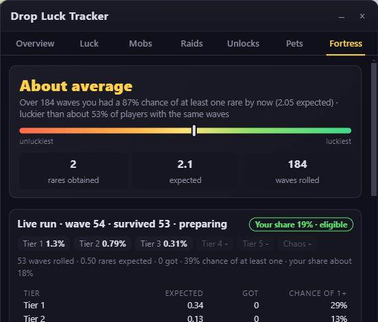
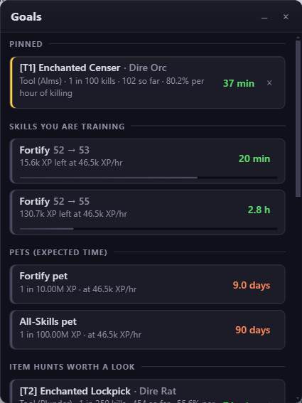
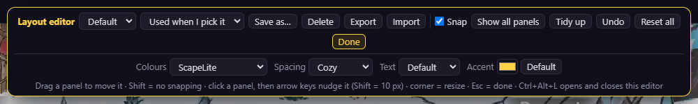
ScapeLite starts small. Add only what you want from the built-in marketplace; changes apply instantly, no restart. Anyone can write a plugin.
Loading plugins…
Download the installer from the latest release on GitHub. The version history is on the same page.
Download for WindowsWindows may show an “unknown publisher” warning because the installer is not code-signed yet: choose More info, then Run anyway. Requires the Steam version of Scapewatch. ScapeLite checks for updates on launch and from Settings → Plugins → About.
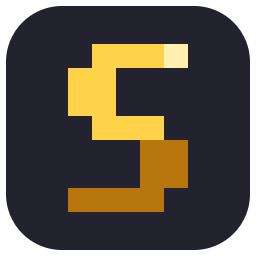
Developers can also run it from source: see the project documentation.
ScapeLite never plays for you: nothing in it picks tasks, rolls, equips, trades or sends anything on its own, and it reads nothing outside the game window. It does change how the game looks and tells you things. A few controls in ScapeLite’s own windows pass your click on to the game’s own button, one click for one click (open a window, pick a task option or loadout, reroll, send a chat line); nothing happens unless you click. The one automatic action is that fused panels open and close together. It is community made, not affiliated with or endorsed by the Scapewatch developers, and the game’s own rules apply to you: if you are unsure about a feature, leave it off.
Everything runs on your PC. The only network traffic is what you set up yourself (for example a Discord webhook), the update check, and the optional anonymous usage count described below, which you can switch off in Settings.
Sometimes a game update changes something a plugin relies on. Updates are checked on launch, and a broken plugin can be switched off in one click without affecting the rest.
Yes. A plugin is a folder with a small manifest and a script; it then shows up in the marketplace. Guidelines: show and tell, never act for the player on your own, clean up after yourself.
The ScapeLite tag marks plugins made by the ScapeLite team. It does not mean they are made by Scapewatch.
Sent, at most once a day, to GoatCounter (a free, privacy-friendly counter): the page /active, the ScapeLite version and, as with every web request, your IP address and browser/OS name (GoatCounter does not store the IP, it only uses it to count unique visitors). Never sent: your name, character, account, game progress or data, settings, plugin list, webhooks, or anything you do. No cookies, no ID is saved. It is on by default, you can switch it off in the first-launch setup or any time in Settings → Plugins → ScapeLite Core.
In the game open Settings, Plugins, Chat Relay and press Open wizard. It lists the channels and roles you need, takes one webhook per channel, checks it, and has a Test this channel button that sends a single, clearly labelled test message. The step-by-step guide with a troubleshooting list is DISCORD-RELAY-SETUP.md. A webhook is private: it stays on your PC and is never shown again after you save it.
Use the bug icon in the status light’s hover menu (bottom-left of the game) or open an issue on GitHub. Bugs in ScapeLite’s Official plugins are fixed by the team; community plugins are supported by their own authors.